Общая физиология ЦНС
Как нейрон «решает», что такое рефлекс и как миллиарды нейронов работают согласованно: контуры, центры, иерархия, доминанта, функциональная система.
4.0Зачем нужна ЦНС
Назначение ЦНС — управлять сложным организмом в сложной среде. Отсюда две задачи:
| Задача | Что это | Чем обеспечивается |
|---|---|---|
| Адаптация | целесообразно реагировать на внешнюю среду | рефлекторный принцип: почти вся деятельность ЦНС — рефлекторные акты |
| Интеграция | управлять организмом как единым целым | координация рефлексов, программ, центров |
Структурно-функциональная единица ЦНС — нейрон.
Адаптация — это «отвечать на сообщения извне», интеграция — «чтобы все отделы компании работали как одна команда, а не каждый сам по себе».
4.1Нейрон: строение
- Дендриты — афферентные (приносящие) отростки: обычно много, короткие, ветвистые.
- Тело (сома) — трофический центр: ядро и органеллы для синтеза белков и обмена.
- Аксон — эфферентный (выносящий) отросток: всегда один, обычно длинный, ветвится в основном на конце → пресинаптические окончания.
С точки зрения передачи информации:
- входной отдел — дендриты + тело (на них до десятков, а иногда сотен тысяч синапсов!);
- выходной отдел — аксон.
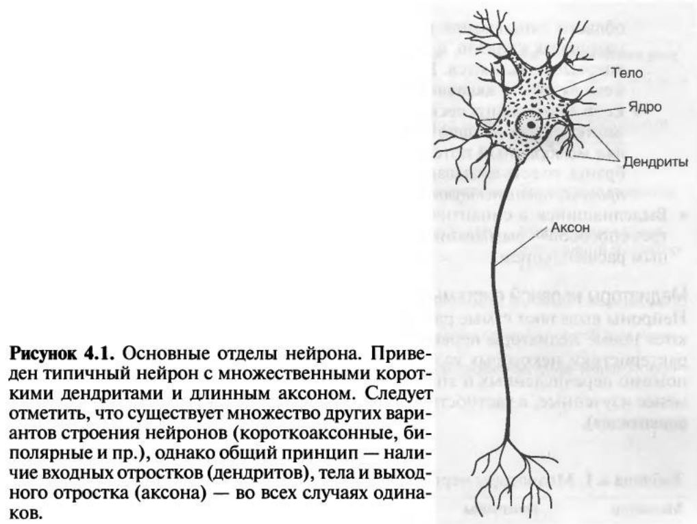
Нейроны бывают разные (чувствительные с одним длинным дендритом, вставочные с коротким аксоном и т. д.), но правило одно: дендриты — чувствительные отростки, аксон — двигательный, и аксон всегда один.
Нейрон = функция в коде: много аргументов на входе (дендриты), одно возвращаемое значение (аксон). Тело — «сервер», где идёт синтез.
4.2Синаптическая передача (кратко, подробно — гл. 2)
Синапс = пресинаптическое окончание + синаптическая щель + постсинаптическая мембрана.
| Рецептор | Что происходит |
|---|---|
| Метаботропный | включаются внутриклеточные биохимические системы → меняются обмен и функция клетки |
| Ионотропный | открываются (реже закрываются) ионные каналы → постсинаптический потенциал |
ВПСП — деполяризация. Один ВПСП почти всегда подпороговый; только сумма ВПСП доводит мембрану до Eкр → ПД.
ТПСП — гиперполяризация, отдаляет потенциал от Eкр → торможение (процесс, препятствующий развитию возбуждения).
ПД возникает не в области синапса (там нет быстрых натриевых каналов), а там, где эти каналы впервые появляются, — в начальном сегменте аксона, аксонном холмике.
Инактивация медиатора — 3 способа: вымывание из щели · обратный захват · ферментативное расщепление.
4.3Медиаторы нервной системы (табл. 4.1)
| Медиатор | Рецепторы (тип) | Где | Роль |
|---|---|---|---|
| Ацетилхолин | N (ИТ) | нервно-мышечный синапс; вегетативные ганглии; нейроны ЦНС | нервно-мышечная передача; передача в ганглиях; быстрая точная передача в ЦНС |
| M (МТ) | окончания парасимпатических нервов на органах; ЦНС | конечный медиатор парасимпатики | |
| Норадреналин | α, β (МТ) | окончания симпатических нервов; голубоватое место | конечный медиатор симпатики; активация обширных зон ЦНС при стрессе |
| Дофамин | D1–D5 (МТ) | черная субстанция; лимбическая система | регуляция движений; эмоции |
| Серотонин (5-НТ) | 5-HT3 (ИТ), остальные (МТ) | ядра шва; энтеральная НС | поведение и сон; ЖКТ |
| ГАМК | ГАМКА (ИТ), ГАМКБ (МТ) | повсеместно в ЦНС | главный тормозный медиатор ЦНС |
| Глицин | (ИТ) | спинной мозг, ствол | тормозный медиатор |
| Глутамат | AMPA, NMDA, каинатные (ИТ); mGlu (МТ) | повсеместно в ЦНС | универсальный возбуждающий медиатор |
ИТ — ионотропные, МТ — метаботропные. Кроме этих есть много других, в том числе большая группа нейропептидов.
«Глутамат — газ, ГАМК — тормоз». Глицин — тормоз «пониже», в спинном мозге и стволе. Дофамин — «черный дофамин» (черная субстанция) для движений, серотонин — «шов».
Многие лекарства — это игры с медиаторами: антидепрессанты блокируют обратный захват серотонина, бензодиазепины (успокоительные) усиливают действие ГАМК, при паркинсонизме дают предшественник дофамина (леводопу).
4.4Интегративная деятельность нейрона
Входов — десятки тысяч, выход — один. В каждый момент нейрон принимает одно решение: будет ли ПД на выходе, сколько и с какой частотой. Это и есть интегративная деятельность.
| Суммация | Что складывается |
|---|---|
| Пространственная | ПСП из разных синапсов (разные точки пространства) одновременно |
| Временнáя | ПСП из одного синапса, пришедшие с коротким промежутком |
Суммация — это алгебраическое сложение: ВПСП и ТПСП «гасят» друг друга. ПД генерируются всё время, пока потенциал аксонного холмика выше Eкр: чем дольше превышение, тем больше ПД.
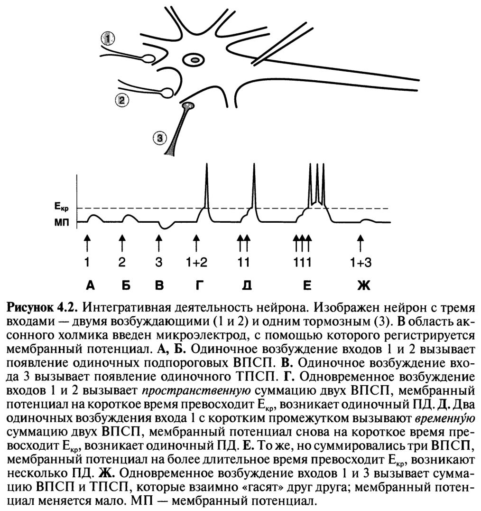
Нейрон-интегратор
нажимай варианты А–Ж (как на рис. 4.2) и смотри, перейдёт ли потенциал за пунктир Eкр. В режиме «Свой опыт» добавляй сигналы на входы сам.
4.5Рефлекс
Рефлекс — реакция на раздражитель, опосредованная нервной системой. Основа — рефлекторная дуга из трёх отделов (кроме двухнейронных моносинаптических рефлексов на растяжение):
Ответ зависит главным образом от:
- раздражителя (горячее → отдёрнуть руку; запах пищи → слюна);
- состояния центрального звена (в стрессе или усилием воли можно не бросить горячее; у сытого слюна на запах не выделяется).
Главное свойство рефлекса — пластичность: старые рефлексы меняются, вырабатываются новые → гибкое приспособление к среде (подробнее гл. 18).
4.6Координация функций ЦНС: классификация
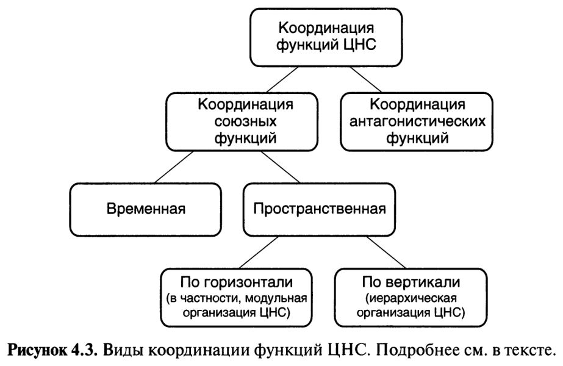
| Вид | Суть | Пример из книги |
|---|---|---|
| Союзных функций | разные виды деятельности согласованно создают единый акт | сокращение сгибателя + расслабление разгибателя при отдёргивании; сгибание одной ноги + разгибание другой при ходьбе |
| → временнáя | рефлексы идут друг за другом в строгой последовательности | цепные рефлексы |
| → пространственная горизонтальная | взаимодействие на одном уровне ЦНС → модульная организация (нейроны → контуры → центры) | нейронные контуры |
| → пространственная вертикальная | центры разных уровней в одной системе, нижние подчинены верхним → иерархическая организация | система управления движениями |
| Антагонистических функций | одни виды деятельности подавляют другие | отдёргивание подавляет чесание; оборонительное поведение подавляет пищевое |
Горизонталь = «коллеги одного отдела договариваются», вертикаль = «начальник управляет подчинёнными».
4.7Модульная организация: нейронные контуры
Нейронный контур — малая группа нейронов, соединённых строго определённым образом; отвечает за стандартную операцию (генерация ритма, превращение редкой импульсации в частую и т. п.).
Книга прямо сравнивает: контуры — микросхемы ЦНС. Сложный прибор собран из ограниченного набора микросхем (усилители, генераторы), а нервный центр — из ограниченного набора контуров; из каких контуров состоит центр, такие у него и свойства.
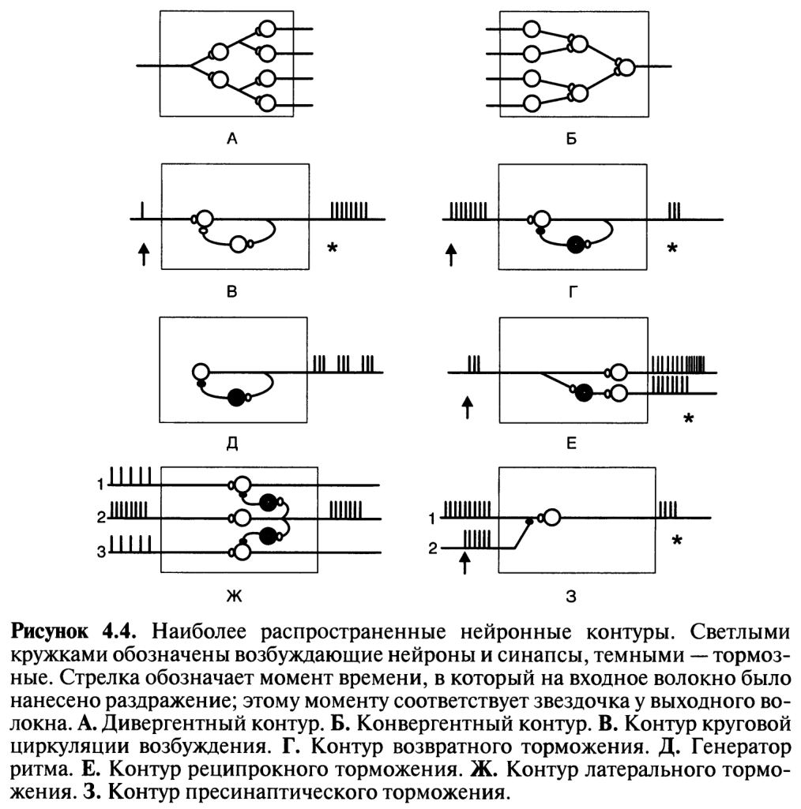
| Контур | Вход → выход | Устройство | Назначение / пример |
|---|---|---|---|
| Распределительные — узлы ветвления и схождения путей, основа организации ЦНС | |||
| А. Дивергентный | 1 вход → много выходов | один аксон ветвится на много нейронов (мультипликация) | распределить возбуждение: тронул горячее → отдёргивание + боль + перераспределение тонуса |
| Б. Конвергентный | много входов → 1 выход | много аксонов на один нейрон | схождение программ: на мотонейрон сгибателя пальца сходятся письмо, фортепиано, чесание |
| Круговые | |||
| В. Круговая циркуляция | короткий импульс → долгая импульсация | коллатераль выходного нейрона через возбуждающие нейроны возвращается к нему же | длительное «эхо»: память, эмоции |
| Г. Возвратное торможение | длинный разряд → короткий | коллатераль → тормозный нейрон → тот же выходной нейрон | быстро оборвать импульсацию → точные быстрые движения. В спинном мозге — торможение Реншоу, клетка Реншоу |
| Д. Генератор ритма | постоянная или никакая → периодические разряды | как Г, но выходной нейрон разряжается постоянно (автоматизм или вход) | дыхательный ритм, ритмы ЭЭГ |
| Прочие | |||
| Е. Реципрокное торможение | возбуждает один выход, тормозит другой | вход прямо на один нейрон и через тормозный вставочный — на другой | мышцы-антагонисты: сгибатель сокращается — разгибатель расслабляется |
| Ж. Латеральное торможение | возбуждённый канал тормозит соседей | коллатерали во все стороны через тормозные вставочные | выделение контраста, например в сетчатке |
| З. Пресинаптическое торможение | подавление на самом входе | тормозное волокно 2 подходит к окончанию волокна 1 → меньше медиатора | выключить ненужную чувствительность ещё до спинномозговых нейронов |
Как работает генератор ритма:
- В и Г внешне похожи, но функции противоположны: коллатераль идёт через возбуждающий (В, продлевает) или тормозный (Г, обрывает) нейрон.
- Г и Д внешне неотличимы. Разница: в генераторе ритма выходной нейрон разряжается постоянно.
- Реципрокное — между антагонистами (сгибатель/разгибатель). Латеральное — между соседями (контраст). Пресинаптическое — до синапса, на окончании аксона.
Осциллограф контуров
выбери контур и нажми «Подать сигнал»: увидишь, как импульсация на входе превращается в импульсацию на выходе. Потом попробуй «Угадай контур».
4.8Нервные центры и их свойства
Нервный центр — локализованное скопление нейронов, управляющее определённой функцией или рефлексом (центр коленного рефлекса, дыхательный центр). Центры состоят из контуров; сам по себе отдельный контур законченную функцию почти никогда не обеспечивает.
Общие свойства вытекают из двух особенностей: в центре идут синаптические переключения и сосредоточены тела нейронов. Значит, свойства центров = свойства синапсов + свойства тел нейронов.
| Свойство | Причина |
|---|---|
| Одностороннее проведение | одностороннее проведение в химических синапсах |
| Замедленное проведение | синаптическая задержка |
| Низкая лабильность | низкая лабильность химических синапсов (по сравнению с волокнами) |
| Высокая утомляемость | высокая утомляемость синапсов |
| Чувствительность к препаратам | блокаторы рецепторов, ингибиторы синтеза или обратного захвата медиатора |
| Чувствительность к гипоксии | аэробный метаболизм тел нейронов |
Первые четыре — «из-за синапса», последние два — «из-за синапса и тела». Мнемоника «ОЗЛУПГ»: Односторонне, Замедленно, Лабильность низкая, Утомляемость, Препараты, Гипоксия.
Специальные свойства зависят от функции и входящих контуров:
- есть круговая циркуляция (эмоциогенные структуры) → длительное последействие;
- есть возвратное торможение (двигательные центры спинного мозга) → короткое последействие;
- есть генератор ритма (дыхательный центр) → ритмичная активность.
Чувствительность к гипоксии на практике: без кровотока мозг теряет сознание за секунды, а необратимые повреждения нейронов начинаются примерно через 4–6 минут. Поэтому при остановке сердца так важно сразу начать реанимацию.
4.9Иерархическая организация
Распределённая система объединяет центры разных уровней для сложной функции. Пример: шагательный рефлекс есть в спинном мозге, но настоящая ходьба требует спинного мозга, ствола, стриопаллидарной системы, мозжечка и коры. Самые сложные распределённые системы — функциональные системы (поведение).
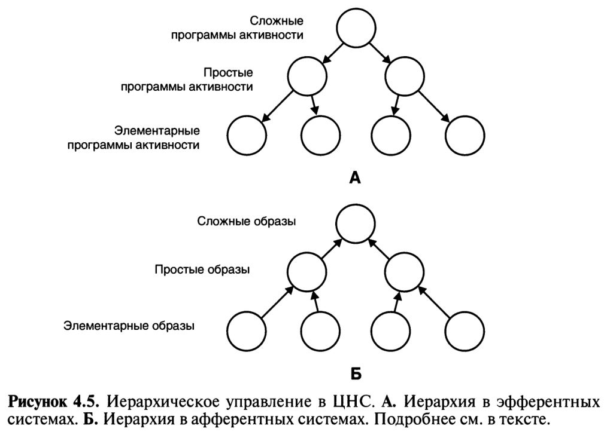
| Эфферентные системы | Афферентные системы | |
|---|---|---|
| Поток | нисходящий | восходящий |
| Низшие центры | простейшие элементы движений (сгибание одной ноги + разгибание другой, постоянство длины мышцы) | простейшая обработка (точки света) |
| Высшие центры | включают/выключают готовые программы и собирают из них сложные | сложная обработка (фигуры → лица) |
| Принцип | дивергенция | конвергенция |
Эфферентная иерархия = Дивергенция (один начальник раздаёт команды многим), афферентная = Конвергенция (донесения стекаются к одному). Сравни: «эфферентный — разфан», «афферентный — к адресату».
4.10Временнáя координация
Программы должны идти в правильной последовательности. Условия: в ЦНС должна приходить информация о ходе и завершении предыдущей программы, и после её завершения должна запускаться следующая. Два механизма:
Обратная связь (обратная афферентация) — информация о ходе выполнения, по ней программа корректируется. Для движений главные — проприоцептивная и вестибулярная.
Цепные рефлексы — пусковой фактор следующего рефлекса = правильное окончание предыдущего. Чесательный рефлекс: сначала поднести конечность, и только после контакта — ритмичное чесание. Любое поведение — цепь программ.
4.11Координация антагонистических функций. Доминанта
- Общий конечный путь — структура, где сходятся разные программы. Классика — мотонейроны спинного мозга (один палец — и письмо, и чесание, и хватание). В широком смысле — любая такая структура.
- Фактор силы/значимости: «сильнее» в поведении = значимее, а не громче (вид хищника важнее кормушки; важное сообщение важнее сильного шума).
- Доминанта — программа поведения, победившая в борьбе (связана с доминирующей потребностью); стойкий очаг. Особенности:
- тормозит другие программы, захватывая общие конечные пути;
- «притягивает» посторонние раздражители: при переполненном мочевом пузыре сильный посторонний раздражитель может вызвать мочеиспускание; любой посторонний раздражитель усиливает зубную или головную боль.
Перед дедлайном (сильная доминанта) не замечаешь голода, а любая мелочь только «подогревает» работу. А у влюблённого всё вокруг напоминает о человеке — это то же «притягивание» посторонних раздражителей. Доминанту описал А. А. Ухтомский.
4.12Функциональная система (П. К. Анохин)
Функциональная система — временное объединение множества нервных структур, направленное на достижение полезного результата (удовлетворение потребности). Любое поведение направлено на потребность (запускается при её появлении, прекращается при удовлетворении или невозможности) и требует участия всего организма.
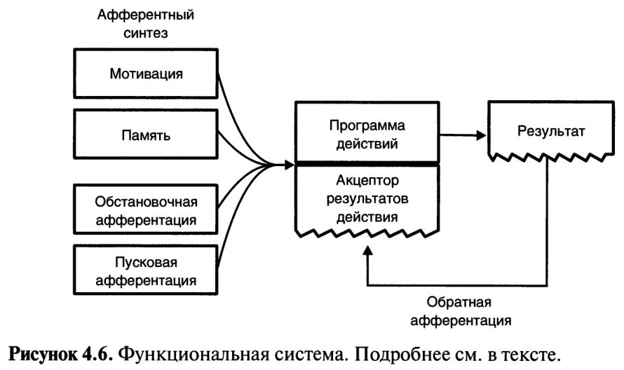
| Компонент | Что это | Пример (обед) |
|---|---|---|
| Мотивация | потребность (близко, но не тождественно; гл. 18) | голод |
| Память | собственный опыт: как удовлетворить | где столовая, сколько стоит обед |
| Обстановочная афферентация | информация об окружающей обстановке | где я, сколько у меня денег |
| Пусковая афферентация | стимул, запускающий поведение | звонок на перемену |
| Афферентный синтез | сопоставление всего этого → решение | «иду в буфет» |
| Программа действий | что делать | встать, дойти, открыть дверь… |
| Акцептор результатов действия | какой результат ожидается | «дверь откроется», «буду сыт» |
| Обратная афферентация | информация о полученных результатах → сравнение с акцептором | дверь открылась / нет |
Совпало → продолжаем. Не совпало → программа корректируется. Достигнут конечный результат или он недостижим (столовая закрыта, времени нет) → функциональная система распадается.
В функциональной системе работают все принципы главы: рефлекторный (потребность и пусковая афферентация — раздражители), иерархический (поведение запускает программы движений, те — шагательный, хватательный рефлексы), цепные рефлексы (программа = цепь), обратная связь (обратная афферентация) и доминанта (система строится на самой значимой потребности и подавляет остальные).
Акцептор результатов действия — это assert в тестах: ожидаемое значение заранее записано, обратная афферентация — фактический результат. Упал тест → поправили код (программу) и запустили снова.
Функциональная система по шагам
выбери сценарий и жми «Дальше». Подсвечивается блок схемы, который работает на этом шаге.
Физиология двигательных систем
Трёхэтажная система управления движениями: спинной мозг → ствол → кора, плюс два «редактора» — мозжечок и базальные ядра.
5.1Общие принципы управления движениями
Классификация движений (условная):
| Пара | Первые | Вторые |
|---|---|---|
| Позные / локомоторные | позные: сохранить, сменить, удержать позу (резкое торможение поезда). Идут постоянно, даже во сне | локомоторные: передвижение, движения конечностей. Всегда на фоне позных |
| Стереотипные / нестереотипные | стереотипные: врождённые, потом совершенствуются (стояние, ходьба) | нестереотипные: приобретённые, индивидуальные (фортепиано) |
Позные движения в основном стереотипны, локомоторные — наоборот.
Иерархическая организация — 3 уровня:
| Уровень | Что в нём заложено |
|---|---|
| Кора головного мозга | программы сложных поведенческих актов |
| Ствол мозга | программы отдельных цельных движений |
| Спинной мозг | программы элементов основных движений |
Высшие центры включают готовые программы низших и собирают из них более сложные.
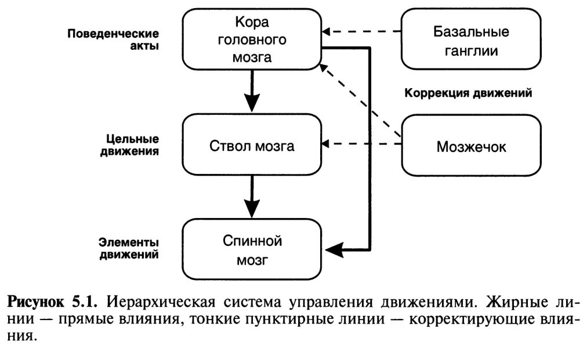
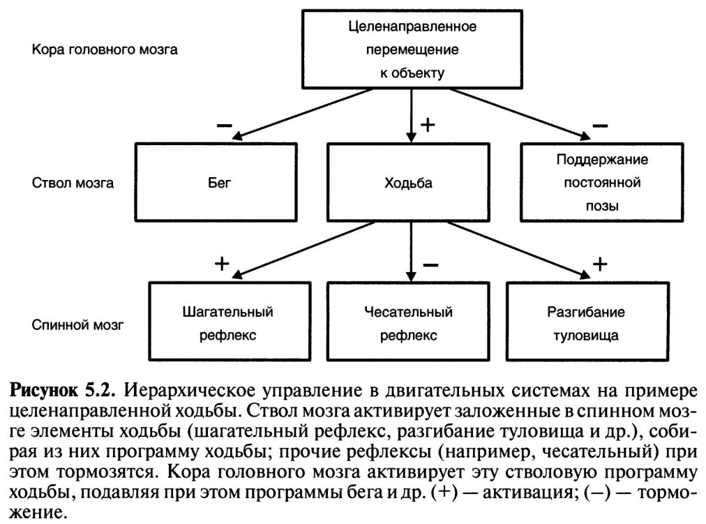
Спинной мозг управляет мышцами, ствол — контурами спинного мозга, кора — центрами ствола.
Как в армии: генерал (кора) говорит «наступаем на север», полковник (ствол) — «батальоны, шагом марш», сержант (спинной мозг) командует «левой-правой» конкретным солдатам (мышцам).
Сегментарный и надсегментарный отделы
- Сегментарный — непосредственно управляет мышцами (и органами) в пределах сегмента. Спинной мозг — преимущественно сегментарный (но благодаря собственным путям в нём есть и надсегментарные программы, например шагательный рефлекс).
- Надсегментарный — управляет программами сегментарных отделов, объединяя их в движение. Кора и другие высшие центры — типичные надсегментарные.
- Ствол — смешанный: надсегментарные программы цельных движений + ядра черепных нервов, иннервирующие мышцы по сегментарному принципу.
Дополнительное прямое управление. Трёхуровневая магистраль даёт только стереотипные, врождённые, в основном позные движения. Для сложных приобретённых кора управляет спинным мозгом напрямую — по кортикоспинальному (пирамидному) пути. К пирамидному пути относят и кортикобульбарные пути к двигательным ядрам черепных нервов.
Пирамидный путь отвечает не за все произвольные движения, а только за тонкие приобретённые (в основном руки и речь). Многие произвольные стереотипные движения кора запускает через стволовые ядра. Поэтому старое деление «пирамидная = произвольные, экстрапирамидная = автоматические» устарело; термин «экстрапирамидная система» остался в основном для клинических состояний.
Системы коррекции — мозжечок и базальные ядра. Сами движений не вызывают (даже при электрическом раздражении), но уточняют все движения до начала и в ходе выполнения.
Обратная связь для движений: проприоцептивная (мышцы и суставы: положение, направление, сила, скорость) и вестибулярная (положение и движение головы в поле тяжести). Зрение и другие — важная, но дополнительная роль.
5.2Спинной мозг: анатомия и нейроны
Сегмент — участок, дающий начало одной паре спинномозговых нервов и иннервирующий определённый участок тела.
| Отдел | шейный | грудной | поясничный | крестцовый | копчиковый |
|---|---|---|---|---|---|
| Сегментов | 8 | 12 | 5 | 5 | 1–3 |
- Серое вещество — тела нейронов: передние рога (двигательные), задние рога (чувствительные), боковые рога — только от CVIII до LIII.
- В задние рога входят задние корешки (начинаются от спинномозговых ганглиев), из передних выходят передние корешки.
- Белое вещество — проводящие пути: передние, боковые, задние канатики.
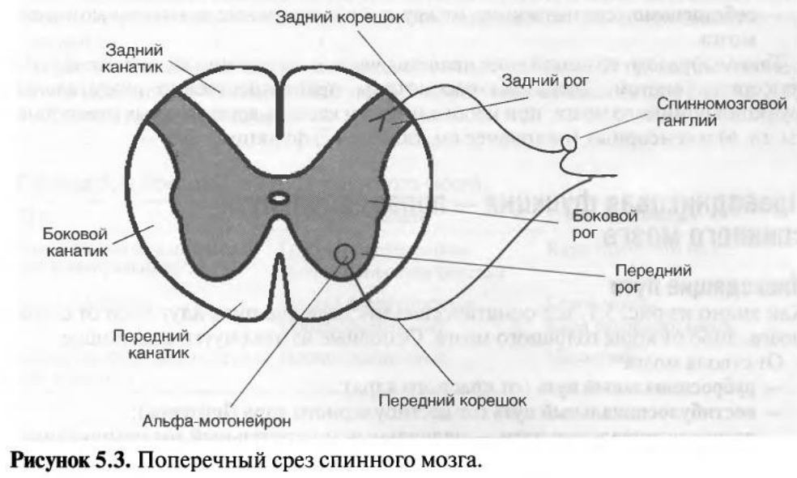
«Задние — Знают» (чувствительные), «передние — Пашут» (двигательные). Закон Белла — Мажанди.
| Нейроны | Где тело | Что делают |
|---|---|---|
| Чувствительные | спинномозговые ганглии | периферическая ветвь от рецептора, центральная — через задний корешок в задний рог |
| Вставочные | основная масса серого вещества | особая разновидность — преганглионарные вегетативные (гл. 6) |
| α-мотонейроны | передние рога | иннервируют собственно скелетные мышцы. Единственные выходные соматические нейроны спинного мозга → общий конечный путь |
| γ-мотонейроны | передние рога | иннервируют интрафузальные волокна мышечного веретена |
Функции: рефлекторная (серое вещество; рефлексы соматические — на мышцы, и вегетативные — на органы, сосуды, железы) и проводниковая (белое вещество).
5.3Проводящие пути спинного мозга
Нисходящие (все — от ствола или коры):
- руброспинальный — от красного ядра;
- вестибулоспинальный — от ядра Дейтерса;
- ретикулоспинальные медиальный и латеральный — от ретикулярной формации;
- тектоспинальный — от четверохолмия;
- кортикоспинальный — от прецентральной извилины.
Собственные пути связывают сегменты между собой → надсегментарные рефлексы в спинном мозге (шагательный).
Название пути = «откуда-куда»: rubro (красный) · vestibulo · reticulo (сеть) · tecto (крыша = четверохолмие) · cortico → spinalis.
Восходящие несут почти всю чувствительность туловища и конечностей (кроме идущей по блуждающим нервам): поверхностную (кожа, слизистые рта и наружных половых органов), проприоцептивную (мышцы, суставы, сухожилия), интероцептивную (органы).
| Пути (табл. 5.1) | Чувствительность | Куда |
|---|---|---|
| Спиноталамические (передний и латеральный) | грубая поверхностная; интероцептивная болевая | кора |
| Голля и Бурдаха (тонкий и клиновидный пучки) | тонкая поверхностная; проприоцептивная | ствол (ядра Голля и Бурдаха) → таламус → кора |
| Спиноцеребеллярные: передний (Говерса) и задний (Флексига) | проприоцептивная | мозжечок |
Логика: поверхностная чувствительность осознаётся → идёт в кору. Проприоцептивная — главная обратная связь → идёт во все двигательные отделы: ствол, кору, мозжечок (кроме базальных ядер). Интероцептивная в основном идёт по блуждающим нервам мимо спинного мозга; исключение — болевая, она идёт по спиноталамическим путям.
5.4Рефлексы спинного мозга
В спинном мозге лежат элементы основных движений: удержание позы (прежде всего вертикальной), ходьба, бег, защитные рефлексы (отдёргивание, чесание). С дугами связаны контуры:
- реципрокного торможения — возбуждение мотонейрона сгибателя тормозит мотонейрон разгибателя;
- возвратного торможения (Реншоу) — быстрое окончание движения → точность; предотвращает длительные разряды и спазмы.
Миотатический рефлекс (моносинаптический рефлекс на растяжение, «сухожильный»)
- Растяжение мышцы → её сокращение. Пример — коленный рефлекс (растяжение вызывают ударом по сухожилию → неточное название «сухожильный»).
- 2 нейрона, 1 синапс → «моносинаптический». С дугой связан контур реципрокного торможения → антагонист расслабляется.
- Смысл: постоянство длины мышцы → элемент удержания позы и делает движения плавнее. Поэтому это самые распространённые рефлексы спинного мозга.
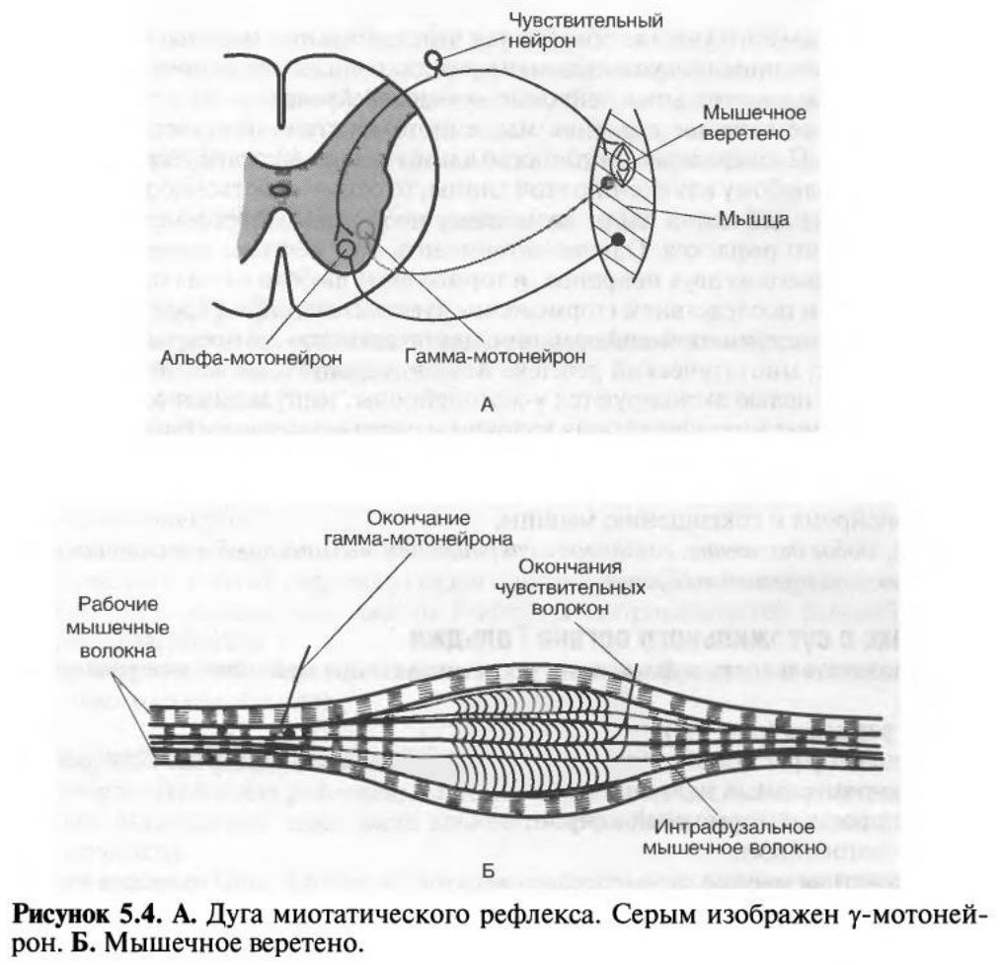
Мышечное веретено: веретенообразный пучок особых интрафузальных волокон (intra — внутри, fusus — веретено) в соединительнотканной сумке, параллельно обычным волокнам. В центре нет актина и миозина — это и есть рецептор растяжения, вокруг него обвиваются чувствительные окончания. К концам (сократительным) подходят γ-мотонейроны.
Зачем γ-мотонейроны. Миотатический рефлекс мешает любому изменению длины, то есть самим движениям. Затормозить его нельзя (дуга из 2 нейронов: без чувствительного не будет проприоцепции, без двигательного — движения). Поэтому его «обманывают»: γ-мотонейрон сокращает концы интрафузального волокна → центр растягивается → веретено шлёт «ложную информацию» об удлинении → α-мотонейрон возбуждается → мышца сокращается. Любое сокращение требует активации и α-, и γ-мотонейронов.
γ-мотонейрон — как поднять планку термостата: в комнате та же температура, но термостат «думает», что холодно, и включает отопление (α-мотонейрон).
Мышечное веретено и γ-петля
ударь молоточком, запусти движение через γ-мотонейрон или сильно напряги мышцу. Следи, какие нейроны «стреляют» и что происходит с длиной мышцы.
Рефлекс с сухожильного органа Гольджи
- Напряжение мышцы → её расслабление (растянуть сухожилие можно только напряжением мышцы).
- Смысл: постоянство напряжения → элемент удержания позы (вертикальное положение требует напряжения разгибателей) и защита от резкого напряжения → травмы.
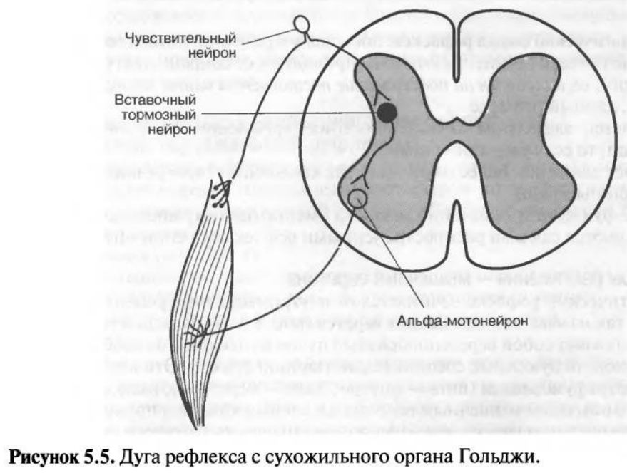
Веретено — в мышце, параллельно волокнам, следит за длиной, растяжение → сокращение, 2 нейрона.
Орган Гольджи — в сухожилии, следит за напряжением, напряжение → расслабление, есть тормозный вставочный нейрон.
Сгибательный и перекрёстный разгибательный рефлексы
- Сгибательный: болевое раздражение кожи → сгибание (отдёргивание). Дуга: кожный болевой рецептор → чувствительный нейрон → несколько вставочных → α-мотонейрон → мышца; + реципрокное торможение разгибателя. Смысл: защитный.
- Перекрёстный разгибательный: то же + разгибание противоположной конечности (на другой стороне — обратный реципрокный контур: разгибатель сокращается, сгибатель расслабляется). Смысл: отдёрнуть + оттолкнуть раздражитель другой конечностью.
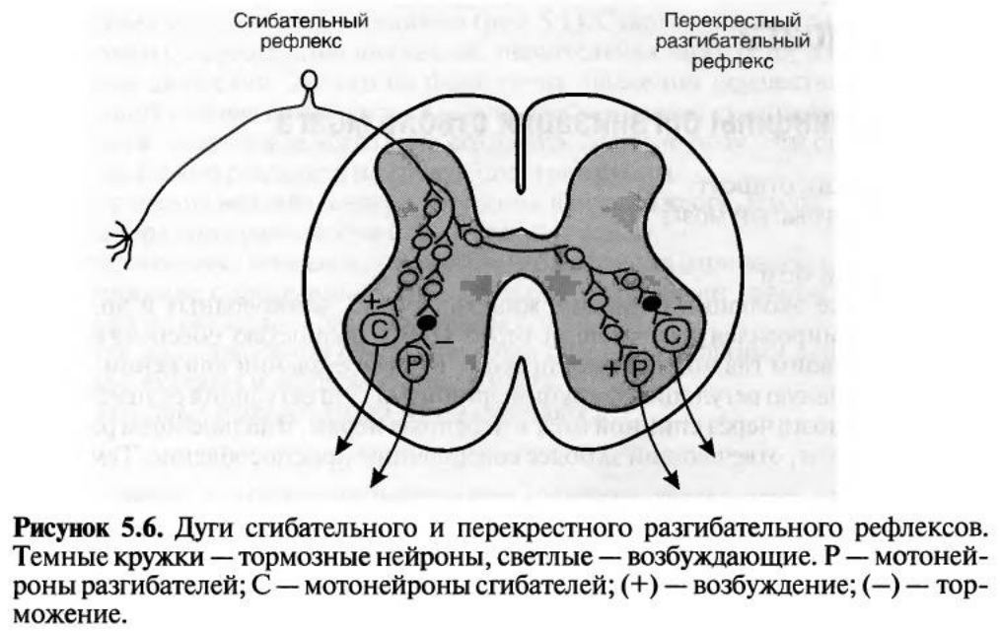
Остальные рефлексы спинного мозга — все в одной таблице:
| Рефлекс | Раздражитель → ответ | Смысл |
|---|---|---|
| Миотатический | растяжение мышцы → её сокращение | постоянство длины, поза, плавность |
| С органа Гольджи | напряжение мышцы → её расслабление | постоянство напряжения, защита от травмы |
| Сгибательный | боль на коже → сгибание конечности | защитный |
| Перекрёстный разгибательный | боль → сгибание своей + разгибание противоположной | защитный (отдёрнуть + оттолкнуть) |
| Шагательный | раздражение подошвы (или без видимых раздражителей) → попеременные шаги. Дуга изучена мало: реципрокные контуры + генераторы ритма | элемент ходьбы |
| Разгибательный толчок | удар по подошве → резкое разгибание | элемент бега (приземлился → оттолкнулся) |
| Стоятельный | надавливание на подошву → длительное разгибание | элемент вертикальной позы |
| Чесательный | слабое раздражение кожи → 1) поднести конечность, 2) ритмично чесать | защитный (сбросить паразита) |
Какой это рефлекс?
нажми на ситуацию — в таблице выше и в окне ниже подсветится нужный рефлекс спинного мозга.
Невролог проверяет коленный, ахиллов и другие сухожильные рефлексы: по их силе и симметрии видно, где поражение. Если нисходящий контроль выключен (инсульт, травма спинного мозга), рефлексы становятся слишком сильными. Если прервана сама дуга (повреждение нерва, корешка), рефлекс исчезает.
5.5Ствол мозга: общие принципы
Ствол = продолговатый мозг + мост + средний мозг. Промежуточный мозг иногда тоже относят, но в физиологии и неврологии это не принято.
У низших животных ствол был высшим отделом ЦНС (вместе с мозжечком). У нас он остался отделом примитивных стереотипных форм поведения и жизненно важных функций. Особенности:
- получает всю чувствительность, кроме обонятельной (с обонянием связано формирование конечного мозга);
- через черепные нервы или спинной мозг управляет всеми мышцами и органами;
- центры стереотипных врождённых движений (поворот головы и глаз к резкому звуку);
- центры жизненно важных функций: дыхательный, сердечно-сосудистый, глотательный и др.;
- структуры генерализованной активации (сон — бодрствование);
- двусторонние связи со спинным мозгом, мозжечком, конечным мозгом (корой); через ствол идут пути спинного мозга к мозжечку и конечному мозгу.
Книга приводит пример: хроническое вегетативное состояние при обширном поражении конечного мозга и сохранном стволе. Человек месяцами и годами сам дышит, у него стабильное кровообращение, чередуются «бодрствование» и сон, есть примитивные реакции, но нет сознания.
| Центры ствола (табл. 5.2) | Функции |
|---|---|
| Ядра черепных нервов III, IV, VI | вспомогательный аппарат глаза |
| V | поверхностная чувствительность головы и шеи |
| VII, XI, XII | мышцы головы и шеи |
| VIII | слух и вестибулярная чувствительность |
| IX, X | внутренние органы |
| Ядра Голля и Бурдаха | тонкая поверхностная и проприоцептивная чувствительность от туловища и конечностей |
| Надсегментарные двигательные: ядро Дейтерса, красное ядро, черная субстанция | стереотипные врождённые движения |
| Активирующие: ретикулярная формация, голубоватое место, ядра шва | генерализованная активация мозга (бодрствование; гл. 18) |
| Жизненно важные: дыхательный, сердечно-сосудистый, глотательный, рвотный, кашлевой | очевидны из названия |
| Претектальные ядра, четверохолмие | реагирование на раздражители, вспомогательный аппарат глаза |
Связи ствола (табл. 5.3) — развернуть
| Связь | Пути и ядра |
|---|---|
| Входы сенсорные | |
| Проприоцептивная и поверхностная от туловища и конечностей | пучки Голля и Бурдаха → ядра Голля и Бурдаха |
| То же от головы и шеи | черепные нервы |
| Интероцептивная | блуждающий и другие черепные нервы |
| Зрительная | зрительный нерв → претектальные ядра, верхние холмики четверохолмия |
| Слуховая | улитковая часть VIII → улитковые ядра |
| Вестибулярная | преддверная часть VIII → вестибулярные ядра |
| Вкусовая | VII, IX, X → ядро одиночного пути |
| Входы центральные | |
| От мозжечка | к ядру Дейтерса и красному ядру |
| От коры | кортиконуклеарные (к ядрам черепных нервов), кортикорубральный, кортиковестибулярный, кортикоретикулярный |
| Выходы | |
| К спинному мозгу | руброспинальный, вестибулоспинальный, ретикулоспинальные, тектоспинальный |
| К мозжечку | оливоцеребеллярный (от нижних олив), понтоцеребеллярный (от ядер моста) |
| К коре | восходящие пути ретикулярной формации; пути чувствительности |
| К органам | блуждающий и другие черепные нервы (парасимпатика) |
5.6Двигательные центры ствола
Ствол хранит программы основных стереотипных, во многом позных движений. Только на их фоне возможна тонкая активность: чтобы пианист сыграл пассаж, ему сначала надо сидеть. Три группы движений:
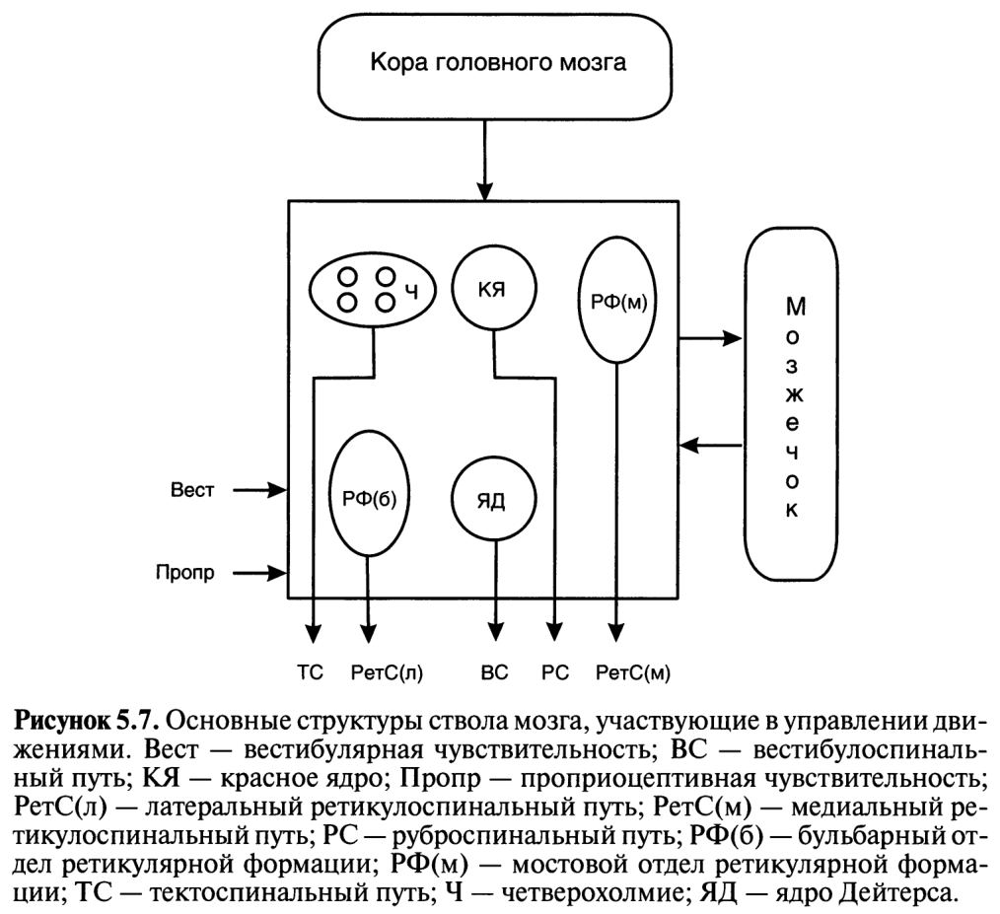
| Система | Центр → путь | Что делает | Входы |
|---|---|---|---|
| Антигравитационная | ретикулярная формация: мостовой отдел → медиальный ретикулоспинальный (возбуждает); бульбарный → латеральный (тормозит) | тонус разгибателей спины, шеи, ног = вертикальное положение, «базовый» тонус. Бодрствование — преобладает возбуждающий, сон — тормозный | — |
| Равновесие | ядро Дейтерса → вестибулоспинальный | положение головы в поле тяжести + шеи относительно головы → положение туловища → быстрая коррекция. В основном разгибатели | вестибулярный, проприоцептивный от мышц шеи, мозжечок, кора |
| Стереотипные движения | красное ядро → руброспинальный | врождённые, в основном позные (смена, восстановление позы); преимущественно сгибатели | проприоцептивный (ядра Голля и Бурдаха), мозжечок, кора (кортикорубральный) |
| Настораживание | четверохолмие → тектоспинальный | поворот глаз, головы и туловища к внезапному зрительному (верхние холмики) или слуховому (нижние) раздражителю | зрение, слух |
Книга: «ретикулоспинальные пути позволяют нам встать, а вестибулоспинальный — не упасть». Оба повышают тонус разгибателей, но ретикулоспинальные влияния постоянны (зависят только от сна и бодрствования), а вестибулоспинальные всё время меняются с положением тела.
Мостовой отдел РФ → медиальный путь → возбуждает. Бульбарный (продолговатый) → латеральный → тормозит. Красное ядро — сгибатели, Дейтерс и ретикулярная формация — разгибатели.
Основные входы для движений: проприоцептивный (главная обратная связь) и вестибулярный. Без них движения практически невозможны. Остальная чувствительность (зрение) помогает, но ходить можно и с закрытыми глазами. Центральные входы: кора (запускает) и мозжечок (корректирует).
Пульт ствола мозга
переключи «сон / бодрствование» и нажимай ситуации: загорятся центр ствола и его нисходящий путь.
5.7Рефлексы ствола мозга
Это цельные движения (не элементы, как в спинном мозге): стереотипные, врождённые, во многом позные.
| Позные рефлексы (табл. 5.4) | Назначение | Пример |
|---|---|---|
| Статические: позно-тонические | смена и сохранение позы | наклон головы вправо → тонус разгибателей правых конечностей ↑ |
| Статические: выпрямительные | восстановление позы | переворот на конечности из положения на спине |
| Статокинетические | удержание позы и равновесия при внезапных воздействиях | кошка в падении переворачивается на лапы; перераспределение тонуса при резком ускорении (вагон метро) |
Главные рефлексогенные зоны — вестибулярный аппарат и проприорецепторы шеи → лабиринтные и шейные рефлексы (но можно и с туловища, конечностей, кожи).
- Глазодвигательные: смена и фиксация взора, слежение (гл. 17).
- Четверохолмный (настораживания, старт-рефлекс): поворот головы, туловища, глаз к внезапному звуку или вспышке. Это первичное реагирование; осознание и распознавание — в коре.
- Прочие: ходьба, бег; у детей — сосание (в том числе пальцев), выплёвывание неприятной пищи.
Статические — поза при неподвижном положении (сменить, сохранить, восстановить). Статокинетические — поза при движении с ускорением (падение, разгон).
5.8Кора головного мозга
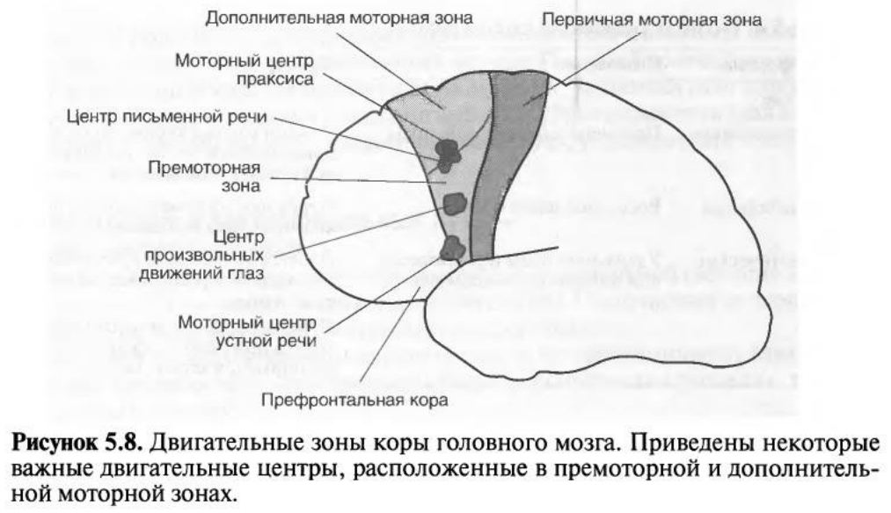
| Зона | Где | Тип коры | Функция |
|---|---|---|---|
| Моторная | прецентральная извилина, перед центральной бороздой | первичная двигательная | управляет отдельными группами мышц (прямо или через стволовые ядра, особенно красное). Соматотопична |
| Премоторная и дополнительная моторная | перед моторной; дополнительная — выше, переходит на медиальную поверхность | вторичная двигательная | хранят программы автоматизированных приобретённых движений. Не соматотопичны, состоят из центров навыков |
| Префронтальная | впереди премоторной и дополнительной | ассоциативная | замысел и планирование поведенческих актов |
Центры навыков в премоторной и дополнительной зонах:
- моторный центр праксиса — основные бытовые навыки (нож и вилка);
- моторный центр письменной речи — движения руки при письме;
- центр произвольных движений глаз — перевод и фиксация взора на интересном предмете;
- моторный центр устной речи (Брока) — «фабрика слов».
Соматотопия моторной зоны:
- тело представлено перевёрнутым: ноги сверху, голова снизу;
- перекрёстно: правое полушарие — левая половина тела;
- больше всего места у мелких мышц для тонких движений: кисть, речевой аппарат, мимика.
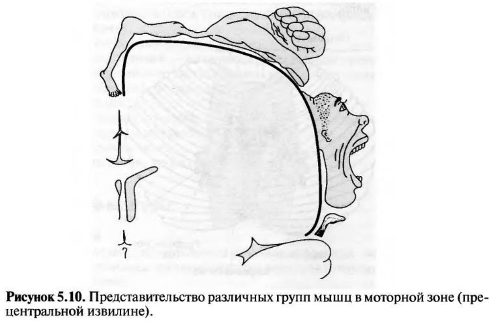
Функции коры в движениях: замысел и планирование поведения и двигательных актов; запуск и управление стереотипными (стволовыми) движениями; обучение и прямое управление нестереотипными приобретёнными движениями. Только кора может замышлять поведенческие акты и учиться нестереотипным движениям.
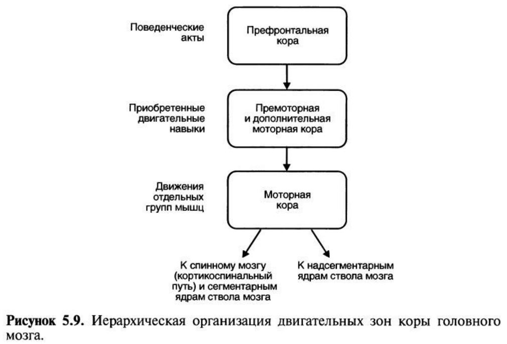
Выход корковой системы — моторная зона. Её пути: к надсегментарным ядрам ствола (кортикорубральный, кортикоретикулярный, кортиковестибулярный) для стереотипных движений и к сегментарным ядрам ствола и спинному мозгу (кортикоспинальный) для тонких движений пальцев и речи.
Пример «встать и сказать речь»: префронтальная кора строит программу → «встать и удержать равновесие» стереотипно → моторная зона → стволовые ядра (красное ядро); «произнести слова» — навык → центр Брока → участки моторной зоны речевых мышц.
Инсульт в левой прецентральной извилине — слабость правой руки и лица; повреждение центра Брока — человек понимает речь, но говорит с трудом, «по слову» (моторная афазия).
5.9Мозжечок
Вырост ствола: червь (по середине) и полушария (по бокам). Оба покрыты корой, внутри — парные ядра:
- ядро шатра;
- пробковидное;
- шаровидное;
- зубчатое.
Три пары ножек: нижние — к продолговатому мозгу, средние — к мосту, верхние — к среднему мозгу.
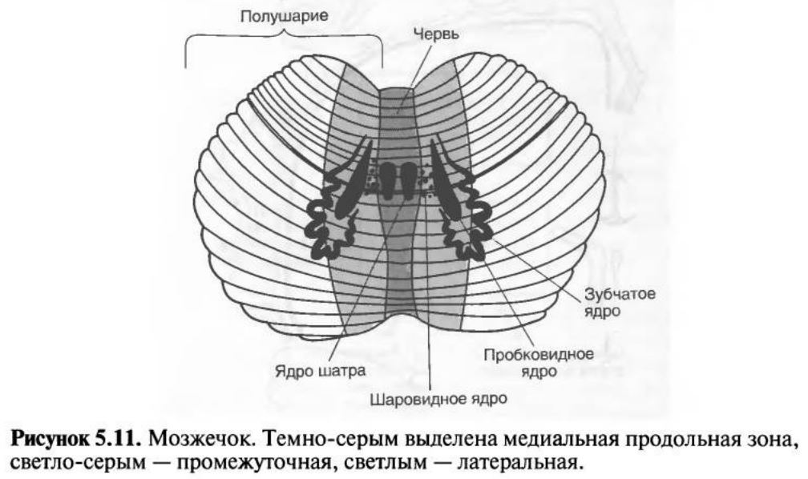
Ядра от середины к краю: «Шатёр Пробкой Шаром Закрыли» — шатра, пробковидное, шаровидное, зубчатое.
Мозжечок — корректирующая система: сам движений не вызывает; при поражении человек может замыслить и выполнить любое движение (магистраль цела), но движение будет неточным (пьяная походка).
Входы: сенсорные — проприоцептивный (спиноцеребеллярные пути) и вестибулярный; центральные — от ствола и от коры. Выходы: к ядрам ствола и к коре через таламус.
Нейронный контур мозжечка
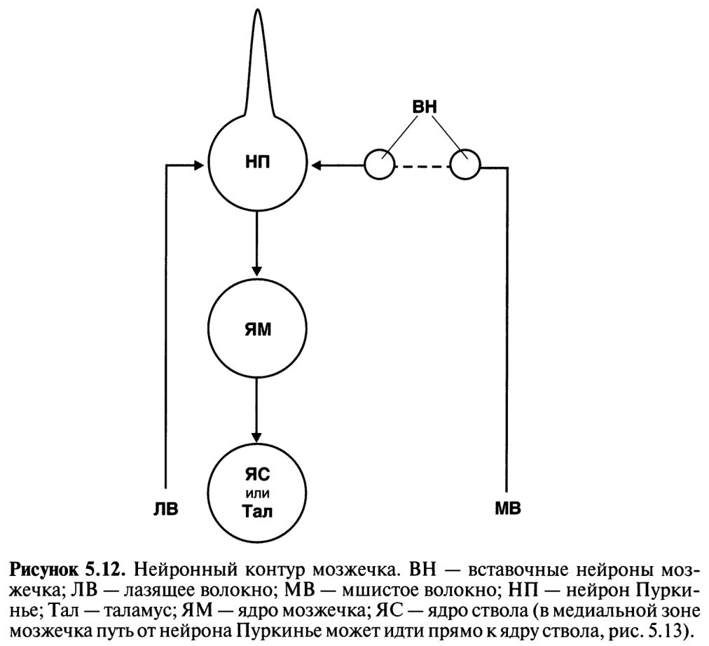
- Нейроны Пуркинье — единственные выходные нейроны коры мозжечка; все сигналы идут через ядра мозжечка (исключение: ядро Дейтерса получает входы и прямо от коры мозжечка).
| Лазящие (лиановидные) | Мшистые (моховидные) | |
|---|---|---|
| Откуда | только от нижних олив (оливоцеребеллярный путь) | от всех остальных: спиноцеребеллярные, от коры, от ствола |
| Куда | прямо на нейрон Пуркинье, много синапсов | через вставочные (клетки-зерна и др.) |
| Роль | пусковая: даже 1 ПД всегда вызывает разряд Пуркинье | информационная: проприоцепция, вестибулярная, копия программы |
Как мозжечок корректирует движение (5 шагов):
- В коре или стволе активируется программа движения.
- Копия программы + проприоцептивная + вестибулярная и другая информация идут по мшистым волокнам в мозжечок.
- Сеть вставочных нейронов хранит память о том, как лучше всего выполнялось это движение. Сопоставляются: план · текущее состояние · память.
- Результат меняет возбудимость нейронов Пуркинье → величину их будущего разряда.
- Лазящие волокна запускают разряд Пуркинье → через ядра в ствол или кору → корректирующая программа накладывается на основную.
Коррекция идёт и перед началом, и постоянно в ходе движения. Ключевая особенность — способность к научению: меняются связи вставочных нейронов (ребёнок учится ходить: на врождённую стволовую программу накладывается уточняющаяся коррекция).
Книга: неясно, что запускает лазящие волокна. По одной гипотезе, в нижних оливах сравнивается запланированное и выполняемое (акцептор и результат), и при ошибке лазящие волокна «стреляют», то есть мозжечок работает при ошибках. Поражение олив даёт те же нарушения, что и поражение мозжечка.
Сегодня известно, что нейроны Пуркинье тормозные (ГАМК), а лазящие волокна считают «сигналом ошибки» для обучения. На опросе отвечай по книге: Пуркинье — единственный выход коры мозжечка, лазящие — пусковые.
Функциональные продольные зоны (чем дальше от червя, тем моложе и тем сложнее движения):
| Зона | Функция | Входы | Ядро | Выход | Симптомы |
|---|---|---|---|---|---|
| Медиальная (червь) | равновесие и поза в поле тяжести, тонус | вестибулярный, проприоцептивный (особенно от шеи) | шатра | ядро Дейтерса (+ прямо от Пуркинье), ретикулярная формация | астазия, абазия, нистагм |
| Промежуточная | коррекция (в основном стволовых) движений в ходе выполнения по обратной связи | вестибулярный, проприоцептивный, прочие + кора (через ядра моста) | пробковидное, шаровидное | красное ядро | интенционный тремор, нарушения локомоторных проб |
| Латеральная (полушария) | коррекция быстрых точных баллистических корковых движений на этапе планирования | кора (через ядра моста) | зубчатое | кора (через таламус) | адиадохокинез, дизартрия |
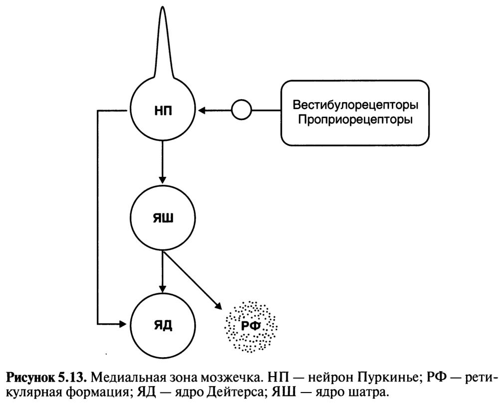
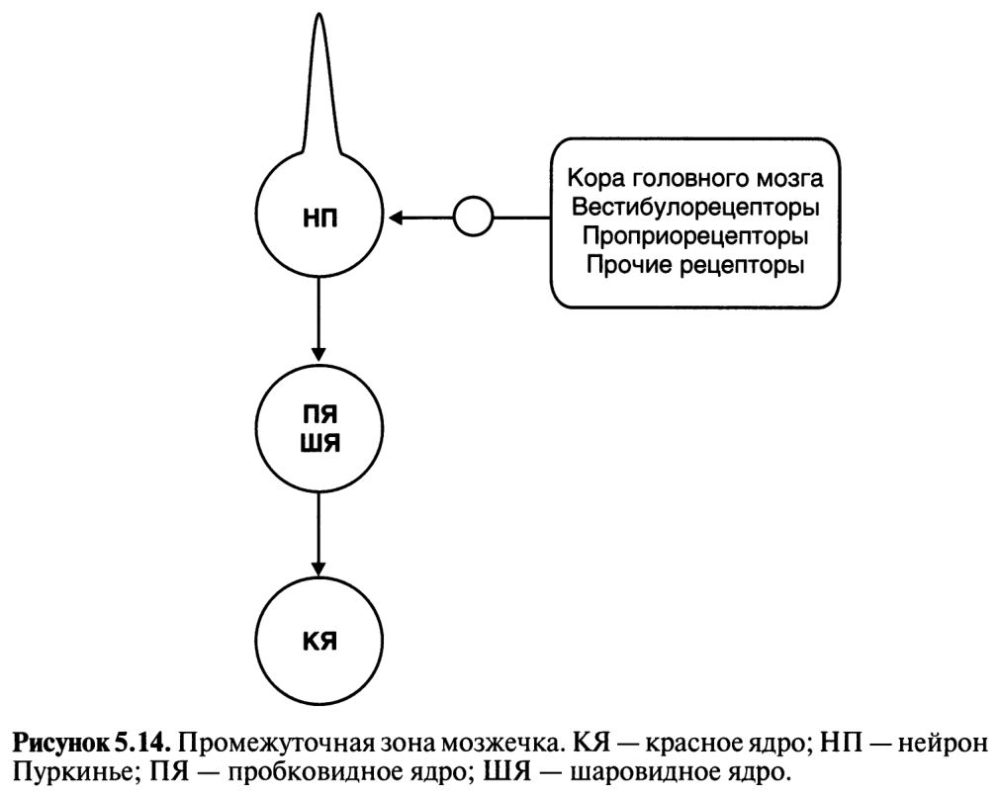
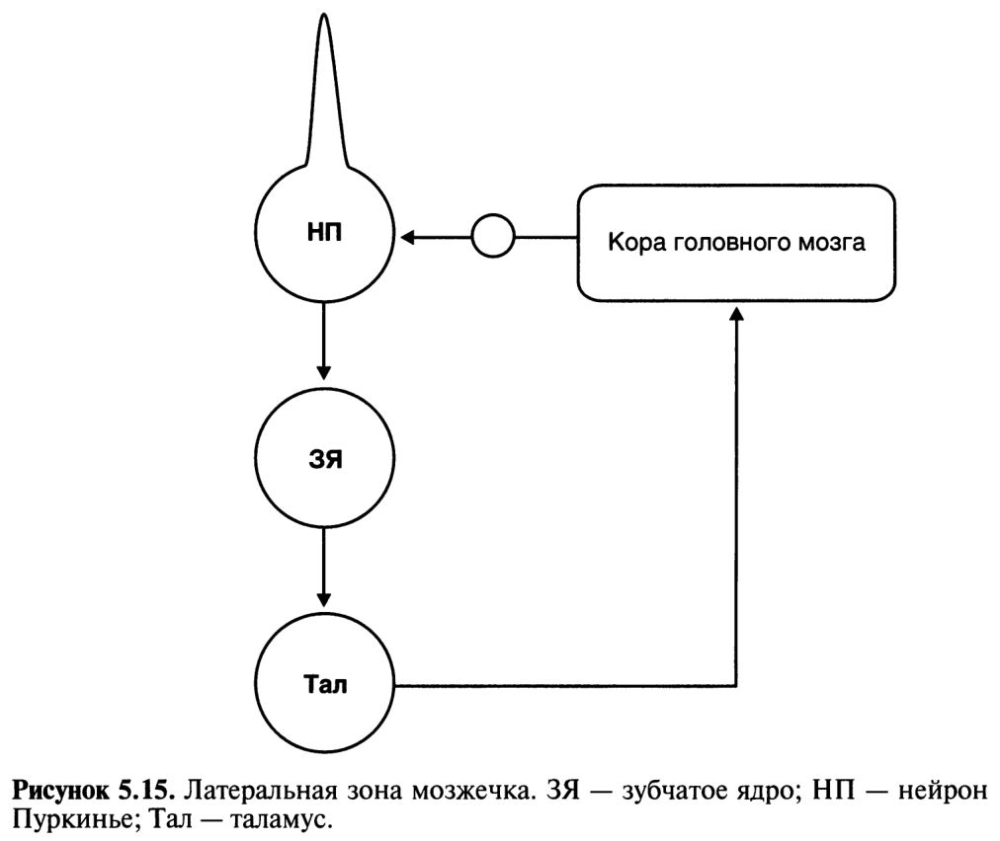
Баллистика — как выстрел: всё решает прицел, после выстрела не поправишь. Корковая программа сначала «сверяется» в мозжечке, а потом кора делает «выстрел». При быстрой речи так заранее планируется каждое движение речевого аппарата.
Симптомы поражения:
- Астазия — не может стоять без поддержки.
- Абазия — нарушено равновесие при ходьбе, «пьяная» походка.
- Нистагм — медленное смещение глаз в одну сторону, затем скачок в другую (в норме запускается вестибулярным аппаратом, при поражении — самопроизвольно).
- Интенционный тремор (intentio — намерение) — дрожание при целенаправленном движении, усиливается к цели. Механизм: запаздывающая обработка проприоцептивной обратной связи → «промахи» то в одну, то в другую сторону.
- Нарушение локомоторных проб — пальце-носовая и др.
- Адиадохокинез — не может быстро содружественно вращать вытянутыми руками (пронация-супинация).
- Дизартрия — нарушение речи, в частности скандированная речь (медленная, по слогам).
Карта мозжечка + тренажёр «найди зону»
нажми на зону мозжечка — увидишь её паспорт. В режиме тренажёра читай симптом и нажимай зону, которая поражена.
Пальце-носовая проба и «пройди по прямой» у сотрудника ГИБДД — проверка мозжечка: алкоголь в первую очередь нарушает его работу. Отсюда шаткая походка и неточные движения.
5.10Базальные ядра
Крупные скопления серого вещества в глубине полушарий. Анатомия и физиология называют их по-разному:
| Анатомически: базальные ядра |
|---|
| 1. Полосатое тело: чечевицеобразное ядро (скорлупа + бледный шар) + хвостатое ядро |
| 2. Ограда |
| 3. Миндалевидное тело |
| Физиологически: стриопаллидарная система |
|---|
| 1. Стриатум (неостриатум): скорлупа + хвостатое ядро |
| 2. Паллидум (палеостриатум): только бледный шар |
| 3. Черная субстанция |
| 4. Субталамическое ядро |
- Полосатое тело (corpus striatum, анатомия) = скорлупа + бледный шар + хвостатое. Стриатум (физиология) = только скорлупа + хвостатое.
- Ограда и миндалина анатомически базальные, а функционально относятся к другим системам. Черная субстанция и субталамическое ядро анатомически не базальные, а функционально входят в систему.
- neo — новый (стриатум молодой), palaios — древний (бледный шар); «паллидум» — от globus pallidus.
Принцип работы: каждое движение сопровождается лишними. Стриопаллидарная система активирует нужные компоненты и тормозит лишние. Для этого она образует кольцо от «замышляющих» к «исполняющим» отделам коры (префронтальная → премоторная, премоторная → моторная) с двумя путями.
| Путь | Маршрут | Тормозных переключений | Итог |
|---|---|---|---|
| Прямой | кора → стриатум → медиальный (внутренний) сегмент бледного шара → таламус → кора | 2 (торможение снимает торможение) | возбуждающий: нужные движения |
| Непрямой | кора → стриатум → латеральный (наружный) сегмент бледного шара → субталамическое ядро → медиальный сегмент → таламус → кора | 3 | тормозный: лишние движения |
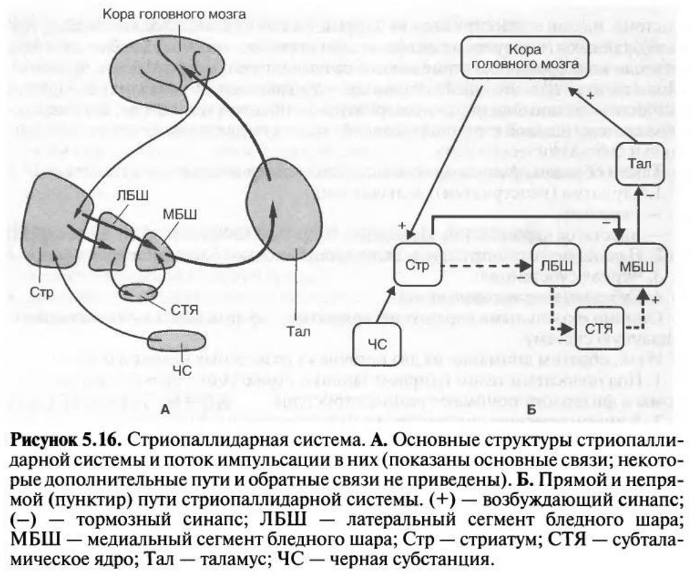
Черная субстанция активирует прямой и тормозит непрямой путь → усиливает все движения, и нужные, и лишние.
| Медиатор | Роль |
|---|---|
| Глутамат | возбуждающие синапсы прямого и непрямого путей («+») |
| ГАМК | тормозные синапсы («−») |
| Дофамин | от черной субстанции: на прямом пути D1 — возбуждающие, на непрямом D2 — тормозные |
| Ацетилхолин | собственные вставочные нейроны стриатума; модулирует, в известной мере антагонист дофамина |
«D1 — один шаг вперёд» (прямой путь, газ). «D2 — два тормоза» (непрямой путь тормозится). Дофамин и там, и там «за движение».
Стриопаллидарный «светофор»
выбери состояние — увидишь, как меняется активность прямого и непрямого путей и что получится на выходе (таламус → кора). Кнопка «Посчитать знаки» показывает, почему прямой путь возбуждающий.
Базальные ядра и мозжечок — две системы коррекции:
| Мозжечок | Стриопаллидарная система | |
|---|---|---|
| Происхождение и связи | вырост ствола, коррекция стволовых движений; только латеральная зона связана с корой | связана только с корой → корковые движения |
| Информация | обширная сенсорная (проприоцептивная, вестибулярная) | почти только от коры |
| Когда корректирует | в ходе выполнения по обратным связям (латеральная — при планировании) | до совершения, на этапе планирования |
| Роль | следит, чтобы движения выполнялись правильно — тактика | выбирает, какие движения совершить — стратегия |
Последствия поражений: либо лишние движения — гиперкинезы (поражён непрямой путь), либо заторможенность — гипокинезия (поражена черная субстанция: меньше активации прямого и растормаживание непрямого → кора тормозится).
| Состояние | Что поражено | Проявления |
|---|---|---|
| Паркинсонизм (гипокинезия) | гибель дофаминергических нейронов черной субстанции или нарушение передачи к стриатуму | маскообразное лицо, семенящая походка, замедленность и малый объём движений |
| Гемибаллизм | субталамическое ядро (часть непрямого пути) | размашистые бросковые движения руки |
| Хорея | гибель нейронов стриатума, от которых начинается непрямой путь | насильственные быстрые движения мышц лица и дистальных отделов конечностей |
Болезнь Паркинсона лечат леводопой (из неё в мозге делается дофамин) и холинолитиками: ацетилхолин в стриатуме — антагонист дофамина. Хорея Гентингтона — наследственная гибель нейронов стриатума. Книга называет влияние на медиаторы этой системы одним из главных достижений современной неврологии.
Интенционный тремор (мозжечок) усиливается при движении к цели. При паркинсонизме тремор обычно в покое (это моё дополнение, в книге тремор при паркинсонизме не описан).
В современной литературе есть ещё «гипердирект» путь (кора → субталамическое ядро) и более сложные модели. На опросе отвечай по книге: 2 пути — прямой и непрямой.
Физиология вегетативных систем
Гипоталамус как «главный термостат» внутренней среды и вегетативная нервная система: симпатика против парасимпатики, медиаторы и рецепторы.
6.1Общие принципы
Главная задача внутренних органов — постоянство внутренней среды (кислород, питательные вещества, температура, pH). Три вида регуляции:
| Регуляция | Как поддерживает константу | Пример |
|---|---|---|
| Поведенческая | через взаимодействие с внешней средой | попить воды, поесть |
| Эндокринная | гормонами, изнутри организма | выход глюкозы из печени |
| Вегетативная | нервами, изнутри организма | спазм кожных сосудов для уменьшения теплоотдачи |
Делить их можно только с оговорками: любое поведение включает вегетативный и эндокринный компоненты. Главный центр поддержания постоянства внутренней среды — гипоталамус.
6.2Гипоталамус
Относится к промежуточному мозгу. Много ядер с разными функциями, но всё понятно из одного положения: гипоталамус — главный центр постоянства внутренней среды. Схема верна для глюкозы, температуры, осмотического давления.
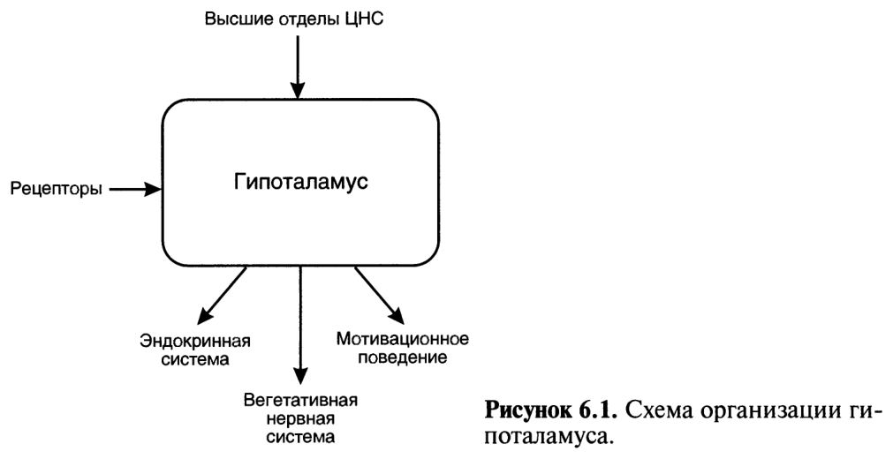
| Что есть в гипоталамусе | Состав |
|---|---|
| Рецепторы внутренней среды | глюкорецепторы (глюкоза крови), осморецепторы (осмотическое давление), терморецепторы (температура крови) |
| Центры поведенческой регуляции (запуск мотивационного поведения) | центр жажды (питьевое), центры голода и насыщения (пищевое), терморегуляторный (терморегуляторное поведение) |
| Центры эндокринной регуляции | ядра, управляющие аденогипофизом, главным регулятором эндокринных желёз (гипоталамо-гипофизарная система, гл. 7) |
| Высшие вегетативные центры | хранят целостные программы для многих органов сразу (реакции на холод или жару), часто с соматическим компонентом: спазм кожных сосудов + дрожь |
| Связи с другими отделами ЦНС | — |
Гипоталамус относится к периферическим вегетативным центрам так же, как ствол к спинному мозгу в движениях: периферия управляет отдельными органами, гипоталамус включает целостные программы.
Другие функции (агрессивное и половое поведение, регуляция половых органов, цикл сон — бодрствование) тоже сводятся к мотивации, эндокринной регуляции или ВНС.
Гипоталамус — «умный дом»: датчики (глюко-, осмо-, терморецепторы) + три способа действия: заставить хозяина что-то сделать (поведение: «иди попей»), включить котельную (эндокринная) или открыть или закрыть заслонки (вегетатика).
Лихорадка — гипоталамус «переставляет термостат» выше: человек мёрзнет, дрожит, кутается (поведение + дрожь + спазм кожных сосудов), пока температура не дойдёт до новой «уставки». Жажда после солёного — сработали осморецепторы.
6.3Вегетативная нервная система: анатомия
Два отдела — симпатический и парасимпатический. К ним относят только двигательное звено; чувствительные волокна от интерорецепторов ни к одному отделу не относят.
Двигательное звено — два нейрона: преганглионарный (тело в ЦНС) → постганглионарный (тело в вегетативном ганглии, за пределами ЦНС) → орган-мишень.
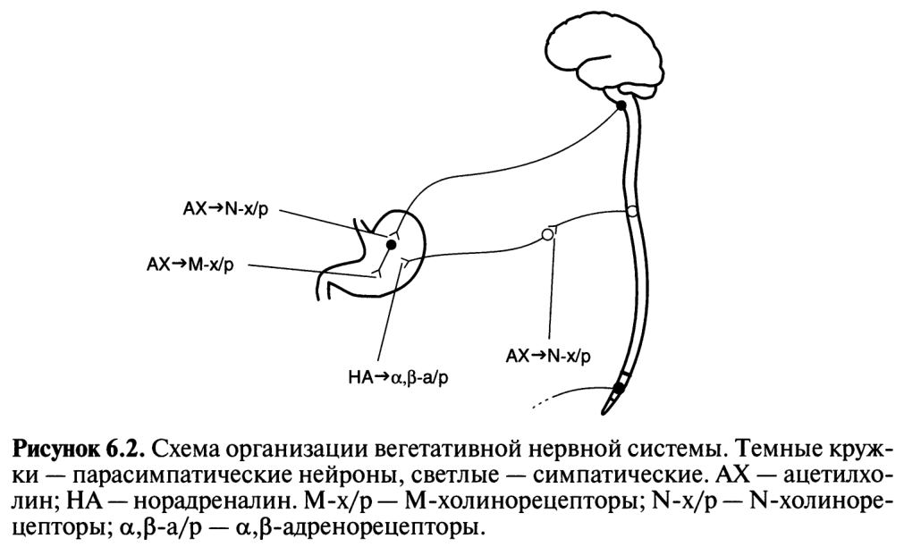
| Нейроны (табл. 6.1) | Где тела | Медиатор |
|---|---|---|
| Парасимпатические преганглионарные | 1) ствол мозга (ядра черепных нервов); 2) крестцовый отдел спинного мозга | АХ |
| Парасимпатические постганглионарные | 1) внутри органов (интрамуральные ганглии); 2) около органов (параорганные: ресничный, крылонёбный и др.) | АХ |
| Симпатические преганглионарные | спинной мозг, боковые рога грудных и поясничных сегментов | АХ |
| Симпатические постганглионарные | 1) симпатический ствол (паравертебральные ганглии); 2) сплетения (превертебральные, например чревное, или солнечное) | НА |
- Стволовой отдел парасимпатики иннервирует все органы, кроме органов малого таза; главный нерв — блуждающий; волокна других черепных нервов — к органам головы и шеи. Крестцовый — органы малого таза.
- Преганглионарные симпатические волокна идут и к мозговому веществу надпочечников — это видоизменённый симпатический ганглий, выделяющий адреналин → единая симпатоадреналовая система.
Расположение = стиль работы. Симпатика выходит из середины (грудь-поясница), ганглии у позвоночника — одна команда расходится сразу на много органов (тревога для всех). Парасимпатика — «краниосакральная» (голова и крестец), ганглии в самом органе — точечная настройка каждого органа.
Боковые рога: в главе 5 — CVIII–LIII, здесь — «грудные и поясничные сегменты». Это одно и то же: там лежат симпатические преганглионарные нейроны. Парасимпатических в боковых рогах грудного отдела нет.
6.4Медиаторы и рецепторы ВНС
Все преганглионарные (и симпатические, и парасимпатические) — ацетилхолин. Постганглионарные парасимпатические — ацетилхолин, симпатические — норадреналин. Иначе: парасимпатика действует на органы ацетилхолином, симпатика — норадреналином.
| Рецептор | Чувствителен к | Где (в частности) | Тип |
|---|---|---|---|
| N-холинорецептор | никотину | постганглионарные нейроны обоих отделов (в ганглиях) | ионотропный |
| M-холинорецептор | мускарину (яд мухомора) | внутренние органы | метаботропный |
| α- и β-адренорецепторы | норадреналину и адреналину надпочечников | органы-мишени симпатики | метаботропные |
Каждый тип делится на подтипы.
Исключение: холинергические симпатические нервы — действуют ацетилхолином. Снабжают потовые железы и, возможно, сосуды скелетных мышц.
N — Nикотин, Nейрон (в ганглии), Nаправленно в канал (ионотропный). M — Mухомор, Mишень-орган, Mетаботропный.
Собери вегетативную цепочку
выбери, куда идёт сигнал. Схема покажет оба нейрона, медиатор в каждом синапсе и рецептор, на который он действует.
6.5Действие на внутренние органы
Симпатика — система стресса, мобилизации ресурсов: зрачки шире, сердце чаще и сильнее, бронхи шире, выброс глюкозы и жирных кислот; ЖКТ тормозится.
Парасимпатика — система восстановления ресурсов: реакции обратные.
| Орган (табл. 6.2) | Симпатика | Парасимпатика |
|---|---|---|
| Зрачки | расширение | сужение |
| Слюнные железы | ↑ секреция α-амилазы (густая слюна) | ↑ секреция воды |
| Желудок: моторика / секреция | торможение / торможение (?) | усиление / усиление |
| Кишечник: моторика / секреция | торможение / торможение (?) | усиление / усиление |
| Бронхи: просвет / секреция | расширение / обычно снижение | сужение / повышение |
| Сердце: частота, сила, проведение в АВ-узле | повышение | снижение |
| Сосуды | в основном сужение | расширение в отдельных органах |
| Мочевой пузырь | торможение мочеиспускания (детрузор расслаблен, сфинктер сокращён) | стимуляция (детрузор сокращён, сфинктер расслаблен) |
| Мобилизация глюкозы из печени (гликогенолиз) | повышение | влияний нет |
| Мобилизация жирных кислот (липолиз) | повышение | влияний нет |
Исключения из правила «стресс/отдых»:
- Некоторые органы иннервирует только один отдел: печень, подкожная жировая клетчатка, большинство сосудов — только симпатика.
- Иногда влияния синергичны: парасимпатика — эрекция, симпатика — эякуляция.
- Один отдел может действовать на орган разнонаправленно: сужать и расширять одни и те же сосуды через разные адренорецепторы.
Тонические влияния — оба отдела постоянно посылают импульсацию, но по-разному: на сердце в покое выражен парасимпатический тонус (симпатический незначителен); на большинство сосудов — сильный симпатический, парасимпатического нет.
Мнемоника эрекции и эякуляции (из англ. учебников): «Point and Shoot» — Parasympathetic → эрекция, Sympathetic → эякуляция.
Стресс ↔ покой
переключай режим или жми ситуацию. Органы на схеме меняются, а в таблице 6.2 выше подсвечиваются строки.
Перед экзаменом: сердце колотится, во рту сухо и вязко (мало воды в слюне, больше амилазы), ладони мокрые (холинергические симпатические волокна к потовым железам!), есть не хочется. Окулист закапывает атропин (блокатор M-холинорецепторов): парасимпатика больше не сужает зрачок, и он расширяется. Бета-блокаторы (анаприлин, бисопролол) урежают пульс, потому что отключают β-адренорецепторы сердца.
6.6Современные дополнения
| Внутриорганные нейроны | Классическая схема | Сейчас показано |
|---|---|---|
| Иннервация | получают парасимпатические преганглионарные волокна | во многом автономны: большинство не иннервируется внешними волокнами |
| Медиаторы | только ацетилхолин | много: пурины, закись азота, дофамин, серотонин, пептиды |
| Типы | только двигательные | двигательные, чувствительные и вставочные |
Значит, внутриорганные нервные системы — самостоятельные нервные центры со своей регуляцией. Лучше всего изучена система ЖКТ — энтеральная нервная система, которая не относится ни к симпатике, ни к парасимпатике.
Медиаторы и синапсы. Медиаторов больше, чем АХ и НА. Один нейрон может выделять сразу несколько веществ: медиатор (основной эффект) + котрансмиттеры (обычно пептиды, дополнительные эффекты). Передача — не только «выделить и подействовать»: регулируются выделение и обратный захват медиатора, чувствительность и плотность рецепторов.
Энтеральная НС — «второй мозг» кишечника: кишка, вынутая из организма, продолжает перистальтику сама.
Тест со счётом
Вопросы перемешиваются. После ответа — объяснение. Фильтр по главам:
Карточки-термины
Нажми на карточку, чтобы перевернуть.
Не путать
Пары, на которых ловят на опросе.
| Это | А это | Как различить |
|---|---|---|
| Дендриты — афферентные | Аксон — эфферентный, всегда один | «Дендрит — Доставляет в нейрон» |
| ВПСП — деполяризация | ТПСП — гиперполяризация | одиночный ВПСП почти всегда подпороговый |
| Пространственная суммация | Временнáя суммация | разные синапсы одновременно / один синапс быстро подряд |
| Место синапса | Место возникновения ПД | ПД — в аксонном холмике (там появляются быстрые Na+-каналы) |
| Круговая циркуляция | Возвратное торможение | похожи внешне: возбуждающий (продлевает) / тормозный (обрывает) нейрон на коллатерали |
| Возвратное торможение | Генератор ритма | строение одинаково; в генераторе выходной нейрон разряжается постоянно |
| Реципрокное торможение | Латеральное торможение | антагонисты (сгибатель/разгибатель) / соседи (контраст в сетчатке) |
| Эфферентная иерархия — дивергенция | Афферентная иерархия — конвергенция | команды расходятся вниз / информация сходится вверх |
| Обратная связь | Цепные рефлексы | оба — временнáя координация: коррекция по ходу / запуск следующего по окончании предыдущего |
| Сила раздражителя | Значимость | в борьбе за общий конечный путь «сильнее» = значимее |
| Сегментарный | Надсегментарный | сам управляет мышцами / управляет программами; ствол — смешанный |
| Пирамидный путь | «Все произвольные движения» | пирамидный — только тонкие приобретённые (рука, речь) |
| α-мотонейрон | γ-мотонейрон | рабочие волокна (общий конечный путь) / интрафузальные волокна веретена |
| Мышечное веретено | Орган Гольджи | длина → сокращение, 2 нейрона / напряжение → расслабление, тормозный вставочный |
| Разгибательный толчок | Стоятельный рефлекс | удар → резко (бег) / давление → длительно (поза) |
| Спиноталамические | Голля и Бурдаха | грубая поверхностная + боль / тонкая поверхностная + проприоцепция |
| Говерса | Флексига | передний / задний спиноцеребеллярный (оба — в мозжечок) |
| Мостовой отдел РФ | Бульбарный отдел РФ | медиальный путь, возбуждает разгибатели / латеральный, тормозит |
| Ретикулоспинальные | Вестибулоспинальный | «встать» (постоянно) / «не упасть» (меняется с позой) |
| Красное ядро | Ядро Дейтерса | сгибатели, стереотипные позные / разгибатели, равновесие |
| Статические рефлексы | Статокинетические | поза в покое / поза при ускорении |
| Ствол мозга | Промежуточный мозг | ствол = продолговатый + мост + средний; гипоталамус — промежуточный |
| Моторная зона | Премоторная + дополнительная | группы мышц, соматотопия / навыки, центры, без соматотопии |
| Лазящие волокна | Мшистые волокна | только от нижних олив, пусковые, прямо на Пуркинье / от всех остальных, информация, через зёрна |
| Медиальная зона мозжечка | Латеральная зона | равновесие, ядро шатра, астазия / баллистика, зубчатое, адиадохокинез |
| Астазия | Абазия | не может стоять / не может ходить ровно |
| Полосатое тело (анатомия) | Стриатум (физиология) | с бледным шаром / без него (скорлупа + хвостатое) |
| Прямой путь | Непрямой путь | 2 торможения → возбуждает, D1 / 3 торможения через СТЯ → тормозит, D2 |
| Медиальный сегмент бледного шара | Латеральный сегмент | общий выход обоих путей / только непрямой путь |
| Мозжечок — тактика | Базальные ядра — стратегия | «как» в ходе движения / «что» до движения |
| Гемибаллизм | Хорея | субталамическое ядро, бросковые движения руки / стриатум, быстрые движения лица и кистей |
| N-холинорецептор | M-холинорецептор | никотин, ганглии, ионотропный / мускарин, органы, метаботропный |
| Постганглионарная симпатика — НА | Потовые железы | исключение: холинергические симпатические волокна (АХ) |
| Парасимпатические ганглии | Симпатические ганглии | в органе или рядом / у позвоночника или в сплетениях |
| Эрекция — парасимпатика | Эякуляция — симпатика | пример синергии отделов |
| Тонус на сердце | Тонус на сосуды | в покое парасимпатический / симпатический (парасимпатического нет) |
Шпаргалка цифр
| Число | Что |
|---|---|
| 2 | задачи ЦНС: адаптация и интеграция |
| 3 | отдела нейрона: дендриты, тело, аксон; аксон — 1 |
| до десятков–сотен тысяч | синапсов на одном нейроне |
| 3 | способа инактивации медиатора: вымывание, обратный захват, расщепление |
| 3 | отдела рефлекторной дуги (кроме двухнейронной) |
| 8 | универсальных нейронных контуров (А–З) |
| 6 | общих свойств нервных центров |
| 2 | механизма временнóй координации: обратная связь, цепные рефлексы |
| 4 | вида афферентации на входе в афферентный синтез: мотивация, память, обстановочная, пусковая |
| 3 | уровня управления движениями: кора, ствол, спинной мозг |
| 8 · 12 · 5 · 5 · 1–3 | сегментов: шейных, грудных, поясничных, крестцовых, копчиковых |
| CVIII–LIII | уровень боковых рогов |
| 5 | нисходящих путей: рубро-, вестибуло-, ретикуло- (2), текто-, кортикоспинальный |
| 3 группы | восходящих путей: спиноталамические (2), Голля и Бурдаха, спиноцеребеллярные (2) |
| 2 нейрона, 1 синапс | миотатический рефлекс |
| 8 | соматических рефлексов спинного мозга в конспекте |
| 3 | отдела ствола: продолговатый, мост, средний |
| 4 | двигательные системы ствола: РФ, Дейтерс, красное ядро, четверохолмие |
| 4 | центра навыков в премоторной/доп. зоне: праксис, письмо, взор, Брока |
| 4 ядра · 3 пары ножек · 3 зоны | мозжечок |
| 5 шагов | коррекции движения мозжечком |
| 4 структуры | стриопаллидарной системы: стриатум, паллидум, черная субстанция, субталамическое ядро |
| 2 и 3 | тормозных переключения в прямом и непрямом путях |
| 4 медиатора | стриопаллидарной системы: глутамат, ГАМК, дофамин, ацетилхолин |
| D1 / D2 | возбуждающие (прямой) / тормозные (непрямой) |
| 3 | вида регуляции внутренней среды: поведенческая, эндокринная, вегетативная |
| 3 типа рецепторов гипоталамуса | глюко-, осмо-, терморецепторы |
| 2 нейрона | в двигательном звене ВНС: пре- и постганглионарный |
| 3 исключения | из правила «стресс/отдых»: один отдел, синергия, разнонаправленность |